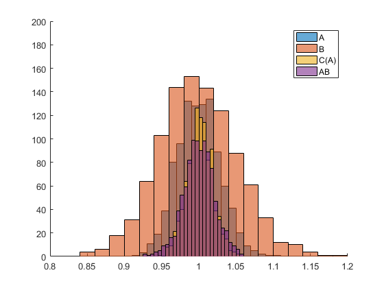
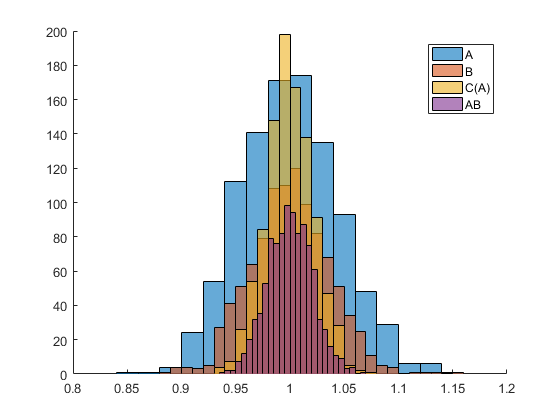
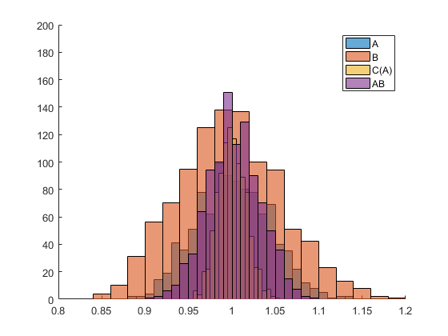

EXAMPLES of NULL distributions and ASCA tables in "Power Curves in ASCA with
Permutation Testing". Submitted to the Special Issue in honor of Prof. Age Smilde.
coded by: Jose Camacho Paez (josecamacho@ugr.es) last modification: 19/Jul/2024
Copyright (C) 2024 University of Granada, Granada
This program is free software: you can redistribute it and/or modify it under the terms of the GNU General Public License as published by the Free Software Foundation, either version 3 of the License, or (at your option) any later version.
This program is distributed in the hope that it will be useful, but WITHOUT ANY WARRANTY; without even the implied warranty of MERCHANTABILITY or FITNESS FOR A PARTICULAR PURPOSE. See the GNU General Public License for more details.
You should have received a copy of the GNU General Public License along with this program. If not, see http://www.gnu.org/licenses/.
Contents
- NULL distributions and ASCA table from data simulated with seed = 1.
- NULL distributions and ASCA table from data simulated with seed = 1.
- NULL distributions and ASCA table from data simulated with seed = 1.
- NULL distributions and ASCA table from data simulated with seed = 1.
- NULL distributions and ASCA table from data simulated with seed = 1.
NULL distributions and ASCA table from data simulated with seed = 1.
The design matrix F contains a full factorial design with four levels for A, three levels for B and four individuals in each cell of C(A). Other inputs are M = 400, kA = kB = kC(A) = kAB = 0.2*theta and kE = 1, theta = 0.5, R = 1000, P = 200 and alpha = 0.05.
clear close all clc reps = 4; vars = 400; levels = {[1,2,3,4],[1,2,3],1:reps}; theta = 0.5; k = [theta*[.2,.2,.2,.2], 1]; F = create_design(levels,1); rng(1); for f=1:2 % main factors A and B Xf{f} = randn(length(levels{f}),vars); end Xf{3} = randn(length(levels{1})*length(levels{3}),vars);% C(A) Xi = randn(length(levels{1})*length(levels{2}),vars); % AB Xe = randn(size(F,1),vars); % E % normalize the matrices for f=1:3 Xf{f} = sqrt(size(Xf{f},1))*Xf{f}/norm(Xf{f},'fro'); end Xi = sqrt(size(Xi,1))*Xi/norm(Xi,'fro'); Xe = sqrt(size(Xe,1))*Xe/norm(Xe,'fro'); X = []; Xf1 = []; Xf2 = []; Xf3 = []; Xi1 = []; N = size(F,1); for i = 1:N Xf1(i,:) = Xf{1}(F(i,1),:); Xf2(i,:) = Xf{2}(F(i,2),:); Xf3(i,:) = Xf{3}(F(i,1)+(F(i,3)-1)*length(levels{1}),:); Xi1(i,:) = Xi(F(i,1)+(F(i,2)-1)*length(levels{1}),:); end X = k(1)*Xf1 + k(2)*Xf2 + k(3)*Xf3 + k(4)*Xi1 + k(5)*Xe; T = parglm_dist(X, F, {[1 2]},1,[],2,[],[],[],[1 3]); legend('A','B','C(A)','AB') axis([0.8 1.2 0 200]) saveas(gcf,'./Figures/Null3_0'); saveas(gcf,'./Figures/Null3_0.eps','epsc'); T.Source(2:5) = {'A','B','C(A)','AB'} table2latex(T,'./Figures/Table3_0.tex')
T =
Source SumSq PercSumSq df MeanSq F Pvalue
___________ ______ _________ __ ______ ______ ________
'Mean' 1.3861 2.7832 1 1.3861 NaN NaN
'A' 3.4739 6.9757 3 1.158 1.1096 0.00999
'B' 2.184 4.3855 2 1.092 1.0613 0.14585
'C(A)' 12.612 25.324 12 1.051 1.0522 0.023976
'AB' 6.1738 12.397 6 1.029 1.0302 0.17582
'Residuals' 23.971 48.134 24 0.9988 NaN NaN
'Total' 49.801 100 48 1.0375 NaN NaN
NULL distributions and ASCA table from data simulated with seed = 1.
The design matrix F contains a full factorial design with four levels for A, three levels for B and four individuals in each cell of C(A). Other inputs are M = 400, kA = kB = kC(A) = kAB = 0.2*theta and kE = 1, theta = 0.5, R = 1000, P = 200 and alpha = 0.05. The whole experiment is increasingly duplicated.
clear close all clc reps = 4; vars = 400; levels = {[1,2,3,4],[1,2,3],1:reps}; theta = 0.5; k = [theta*[.2,.2,.2,.2], 1]; F = create_design(levels,1); F = [F;F]; rng(1); for f=1:2 % main factors A and B Xf{f} = randn(length(levels{f}),vars); end Xf{3} = randn(length(levels{1})*length(levels{3}),vars);% C(A) Xi = randn(length(levels{1})*length(levels{2}),vars); % AB Xe = randn(size(F,1),vars); % E % normalize the matrices for f=1:3 Xf{f} = sqrt(size(Xf{f},1))*Xf{f}/norm(Xf{f},'fro'); end Xi = sqrt(size(Xi,1))*Xi/norm(Xi,'fro'); Xe = sqrt(size(Xe,1))*Xe/norm(Xe,'fro'); X = []; Xf1 = []; Xf2 = []; Xf3 = []; Xi1 = []; N = size(F,1); for i = 1:N Xf1(i,:) = Xf{1}(F(i,1),:); Xf2(i,:) = Xf{2}(F(i,2),:); Xf3(i,:) = Xf{3}(F(i,1)+(F(i,3)-1)*length(levels{1}),:); Xi1(i,:) = Xi(F(i,1)+(F(i,2)-1)*length(levels{1}),:); end X = k(1)*Xf1 + k(2)*Xf2 + k(3)*Xf3 + k(4)*Xi1 + k(5)*Xe; T = parglm_dist(X, F, {[1 2]},1,[],2,[],[],[],[1 3]); legend('A','B','C(A)','AB') axis([0.8 1.2 0 200]) saveas(gcf,'./Figures/Null3_1'); saveas(gcf,'./Figures/Null3_1.eps','epsc'); T.Source(2:5) = {'A','B','C(A)','AB'} table2latex(T,'./Figures/Table3_1.tex')
T =
Source SumSq PercSumSq df MeanSq F Pvalue
___________ ______ _________ __ ______ ______ ________
'Mean' 1.7243 1.7257 1 1.7243 NaN NaN
'A' 3.8883 3.8914 3 1.2961 1.1885 0.000999
'B' 2.7994 2.8017 2 1.3997 1.2888 0.000999
'C(A)' 13.113 13.124 12 1.0928 1.0946 0.000999
'AB' 6.5162 6.5215 6 1.086 1.0879 0.001998
'Residuals' 71.877 71.936 72 0.9983 NaN NaN
'Total' 99.919 100 96 1.0408 NaN NaN
NULL distributions and ASCA table from data simulated with seed = 1.
The design matrix F contains a full factorial design with four levels for A, three levels for B and four individuals in each cell of C(A). Other inputs are M = 400, kA = kB = kC(A) = kAB = 0.2*theta and kE = 1, theta = 0.5, R = 1000, P = 200 and alpha = 0.05. The number of levels of A, L_A, is increasingly duplicated.
clear close all clc reps = 4; vars = 400; levels = {1:8,[1,2,3],1:reps}; theta = 0.5; k = [theta*[.2,.2,.2,.2], 1]; F = create_design(levels,1); rng(1); for f=1:2 % main factors A and B Xf{f} = randn(length(levels{f}),vars); end Xf{3} = randn(length(levels{1})*length(levels{3}),vars);% C(A) Xi = randn(length(levels{1})*length(levels{2}),vars); % AB Xe = randn(size(F,1),vars); % E % normalize the matrices for f=1:3 Xf{f} = sqrt(size(Xf{f},1))*Xf{f}/norm(Xf{f},'fro'); end Xi = sqrt(size(Xi,1))*Xi/norm(Xi,'fro'); Xe = sqrt(size(Xe,1))*Xe/norm(Xe,'fro'); X = []; Xf1 = []; Xf2 = []; Xf3 = []; Xi1 = []; N = size(F,1); for i = 1:N Xf1(i,:) = Xf{1}(F(i,1),:); Xf2(i,:) = Xf{2}(F(i,2),:); Xf3(i,:) = Xf{3}(F(i,1)+(F(i,3)-1)*length(levels{1}),:); Xi1(i,:) = Xi(F(i,1)+(F(i,2)-1)*length(levels{1}),:); end X = k(1)*Xf1 + k(2)*Xf2 + k(3)*Xf3 + k(4)*Xi1 + k(5)*Xe; T = parglm_dist(X, F, {[1 2]},1,[],2,[],[],[],[1 3]); legend('A','B','C(A)','AB') axis([0.8 1.2 0 200]) saveas(gcf,'./Figures/Null3_2'); saveas(gcf,'./Figures/Null3_2.eps','epsc'); T.Source(2:5) = {'A','B','C(A)','AB'} table2latex(T,'./Figures/Table3_2.tex')
T =
Source SumSq PercSumSq df MeanSq F Pvalue
___________ ______ _________ __ ______ ______ ________
'Mean' 1.6805 1.6809 1 1.6805 NaN NaN
'A' 8.1368 8.1388 7 1.1624 1.1314 0.000999
'B' 2.6052 2.6058 2 1.3026 1.2794 0.000999
'C(A)' 24.787 24.793 24 1.0328 1.0219 0.1049
'AB' 14.254 14.258 14 1.0182 1.0074 0.37363
'Residuals' 48.512 48.524 48 1.0107 NaN NaN
'Total' 99.976 100 96 1.0414 NaN NaN
 NULL distributions and ASCA table from data simulated with seed = 1.
The design matrix F contains a full factorial design with four levels for A, three levels for B and four individuals in each cell of C(A). Other inputs are M = 400, kA = kB = kC(A) = kAB = 0.2*theta and kE = 1, theta = 0.5, R = 1000, P = 200 and alpha = 0.05. The number of levels of B, L_B, is increasingly duplicated.
clear close all clc reps = 4; vars = 400; levels = {[1,2,3,4],1:6,1:reps}; theta = 0.5; k = [theta*[.2,.2,.2,.2], 1]; F = create_design(levels,1); rng(1); for f=1:2 % main factors A and B Xf{f} = randn(length(levels{f}),vars); end Xf{3} = randn(length(levels{1})*length(levels{3}),vars);% C(A) Xi = randn(length(levels{1})*length(levels{2}),vars); % AB Xe = randn(size(F,1),vars); % E % normalize the matrices for f=1:3 Xf{f} = sqrt(size(Xf{f},1))*Xf{f}/norm(Xf{f},'fro'); end Xi = sqrt(size(Xi,1))*Xi/norm(Xi,'fro'); Xe = sqrt(size(Xe,1))*Xe/norm(Xe,'fro'); X = []; Xf1 = []; Xf2 = []; Xf3 = []; Xi1 = []; N = size(F,1); for i = 1:N Xf1(i,:) = Xf{1}(F(i,1),:); Xf2(i,:) = Xf{2}(F(i,2),:); Xf3(i,:) = Xf{3}(F(i,1)+(F(i,3)-1)*length(levels{1}),:); Xi1(i,:) = Xi(F(i,1)+(F(i,2)-1)*length(levels{1}),:); end X = k(1)*Xf1 + k(2)*Xf2 + k(3)*Xf3 + k(4)*Xi1 + k(5)*Xe; T = parglm_dist(X, F, {[1 2]},1,[],2,[],[],[],[1 3]); legend('A','B','C(A)','AB') axis([0.8 1.2 0 200]) saveas(gcf,'./Figures/Null3_3'); saveas(gcf,'./Figures/Null3_3.eps','epsc'); T.Source(2:5) = {'A','B','C(A)','AB'} table2latex(T,'./Figures/Table3_3.tex')
T =
Source SumSq PercSumSq df MeanSq F Pvalue
___________ ______ _________ __ _______ ______ ________
'Mean' 1.537 1.5426 1 1.537 NaN NaN
'A' 3.9359 3.9501 3 1.312 1.2495 0.000999
'B' 5.8933 5.9146 5 1.1787 1.1578 0.000999
'C(A)' 13.079 13.126 12 1.0899 1.0913 0.000999
'AB' 15.27 15.325 15 1.018 1.0193 0.17283
'Residuals' 59.926 60.141 60 0.99876 NaN NaN
'Total' 99.641 100 96 1.0379 NaN NaN
 NULL distributions and ASCA table from data simulated with seed = 1.
The design matrix F contains a full factorial design with four levels for A, three levels for B and four individuals in each cell of C(A). Other inputs are M = 400, kA = kB = kC(A) = kAB = 0.2*theta and kE = 1, theta = 0.5, R = 1000, P = 200 and alpha = 0.05. The number of replicates in C(A), r_{C(A)}, is increasingly duplicated.
clear close all clc reps = 8; vars = 400; levels = {[1,2,3,4],[1,2,3],1:reps}; theta = 0.5; k = [theta*[.2,.2,.2,.2], 1]; F = create_design(levels,1); rng(1); for f=1:2 % main factors A and B Xf{f} = randn(length(levels{f}),vars); end Xf{3} = randn(length(levels{1})*length(levels{3}),vars);% C(A) Xi = randn(length(levels{1})*length(levels{2}),vars); % AB Xe = randn(size(F,1),vars); % E % normalize the matrices for f=1:3 Xf{f} = sqrt(size(Xf{f},1))*Xf{f}/norm(Xf{f},'fro'); end Xi = sqrt(size(Xi,1))*Xi/norm(Xi,'fro'); Xe = sqrt(size(Xe,1))*Xe/norm(Xe,'fro'); X = []; Xf1 = []; Xf2 = []; Xf3 = []; Xi1 = []; N = size(F,1); for i = 1:N Xf1(i,:) = Xf{1}(F(i,1),:); Xf2(i,:) = Xf{2}(F(i,2),:); Xf3(i,:) = Xf{3}(F(i,1)+(F(i,3)-1)*length(levels{1}),:); Xi1(i,:) = Xi(F(i,1)+(F(i,2)-1)*length(levels{1}),:); end X = k(1)*Xf1 + k(2)*Xf2 + k(3)*Xf3 + k(4)*Xi1 + k(5)*Xe; T = parglm_dist(X, F, {[1 2]},1,[],2,[],[],[],[1 3]); legend('A','B','C(A)','AB') axis([0.8 1.2 0 200]) saveas(gcf,'./Figures/Null3_4'); saveas(gcf,'./Figures/Null3_4.eps','epsc'); T.Source(2:5) = {'A','B','C(A)','AB'} table2latex(T,'./Figures/Table3_4.tex')
T =
Source SumSq PercSumSq df MeanSq F Pvalue
___________ ______ _________ __ ______ ______ ________
'Mean' 1.6665 1.6705 1 1.6665 NaN NaN
'A' 4.0614 4.0712 3 1.3538 1.3083 0.000999
'B' 2.6655 2.672 2 1.3328 1.2989 0.000999
'C(A)' 29.026 29.097 28 1.0367 1.0333 0.021978
'AB' 6.1566 6.1716 6 1.0261 1.0228 0.24276
'Residuals' 56.182 56.318 56 1.0032 NaN NaN
'Total' 99.758 100 96 1.0391 NaN NaN
